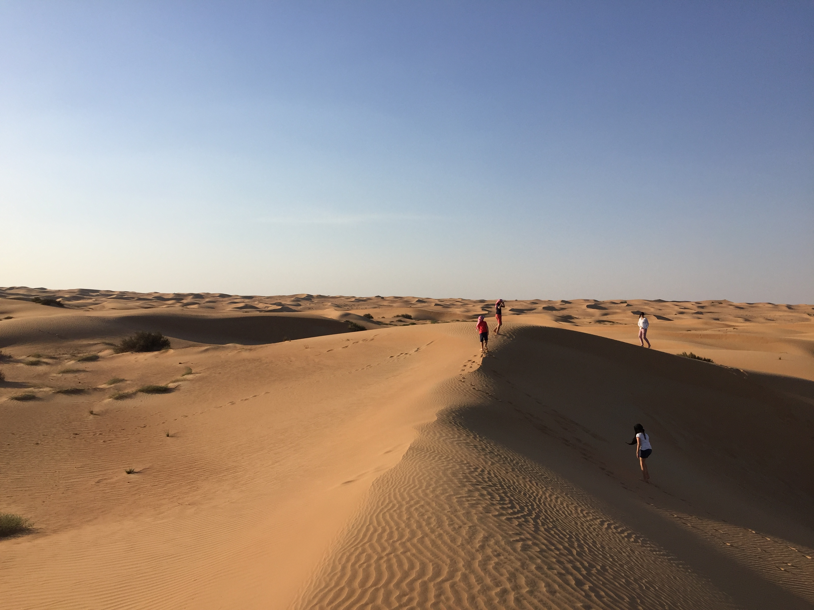
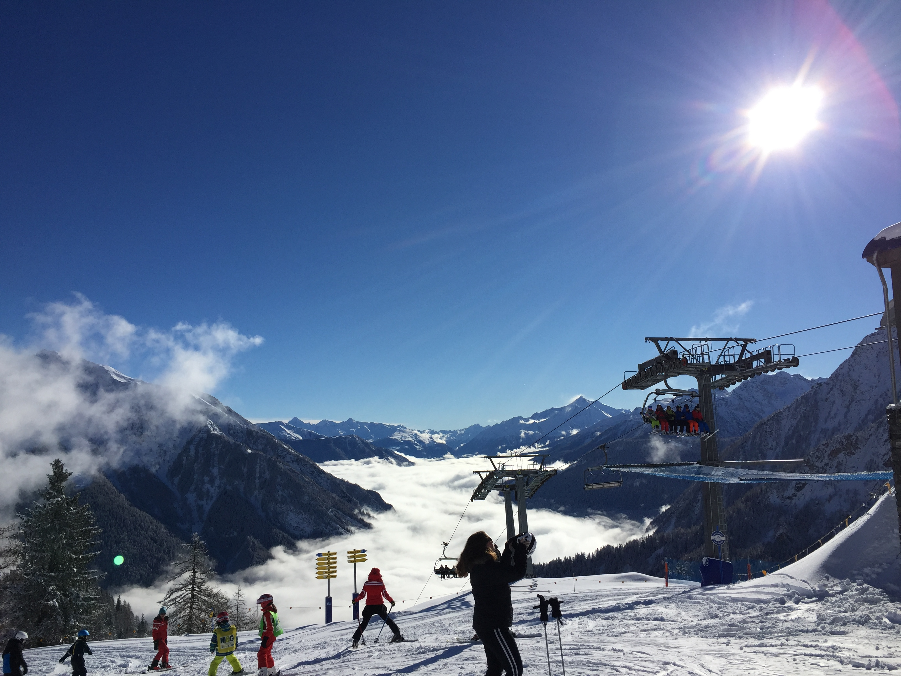

CSC 280
Here is an account of my reflections through travel, experience, hardship, discomfort, and apprecation.
In the world we live in,
where we measure people by their job and not their conscience,
where we relinquish authenticity for superficiality,
where we reduce complexity with banality,
where we suppress morality for honor,
where we dream but surrender to conformity,
where we forego apology for blame,
where we define success as the sum of our belongings and not the sum of our relationships,
here is a taste of the beauty, love, humanity, and compassion,
In the world we live in,
where we too often forget to appreciate family, opportunity, purity
Here are a number of pictures that reveal some of the beauty in our world.
Lsook closely, there is more good than bad.


Here are a number of stories and talks that have been both enlightening and contextually inspiring. John McPhee composed a beautiful story about mothers and silk parachutes. TED has a number of talks about the importance of relationships in happiness. Financial Times tells the inspiring story of Shin Dong-hyuk who describes "freedom as roasted chicken". Ken Robinson talks about creativity and the importance of education in its cultivation. Here are some thought-provoking quotes.